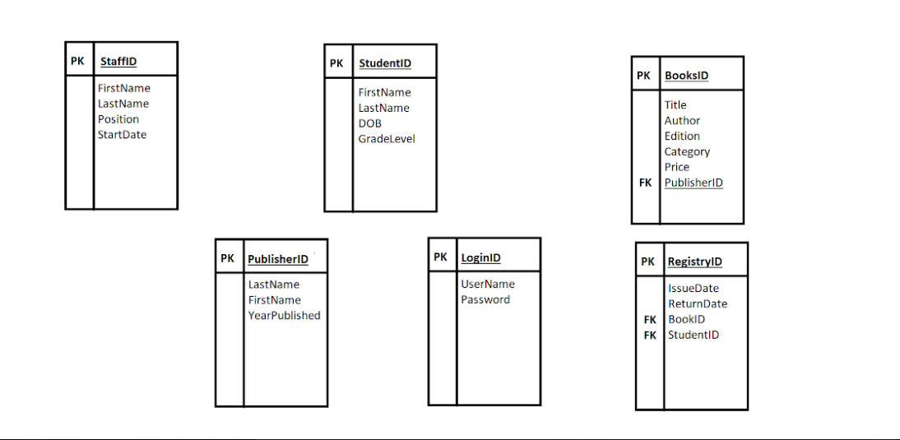

Background
IS 495 focuses on the analysis and logical design of computer-based information systems. Information systems development is a process in which technical, organizational, and human aspects of a system are analyzed and changed in the hope of creating an improved system. Emphasis is placed upon the identification and modeling of system requirements that will meet the business needs of an organization and provide the basis for subsequent systems development. This course will give students an understanding of the tools and techniques that are available for systems development.
Over the course of the semester, my group of five has had the opportunity to complete a SCRUM project, where we're to go into our chosen problem area and analyze the business processes that are relevant to the problem. This project has required us to gather the necessary requirements to ultimately solve our problem, and implement an optimal solution using appropriate tools and techniques. Successful completion of the project has had us draw on knowledge and skills learned in earlier information systems courses.
As of this writing, we'll be starting our third, and final sprint of our project on Monday (Nov. 21). Beginning work in the middle of September, our project timeline has been broken up into two three-week sprints (Sprint 1 & 2), and one two-week sprint (Sprint 3).
The Project
Sprint 0
The period of time between the beginning of the semester and the start of Sprint 1, is what I'm going to refer to as Sprint 0. During this period of time, our main focus was ensuring that we became comfortable with the people that we'd be working with for the remainder of the semester. I had signed up for this class with one of my good friends, and naturally was expecting to be able to work with her, but as soon as our professor finished going over the syllabus, he told us that he'd taken the liberty of letting WebCampus randomize our teammates. Upon hearing this, my heart sank, suddenly everyone was a wildcard; not knowing the work ethic of other people that you're essentially forced to now interact with absolutely sucks. Fast forward to the beginning of Sprint 1, I was at least confident in the abilities of two of my four other group members, and honestly that sufficed.
Sprint 1
During Sprint 1, our main goal was really nailing down a solid idea for our project, while also laying the groundwork for the following two sprints. Along with that, another big focus of this sprint, was us being (re)introduced to Atlassian's Jira software, which allows for project management and organization. So to get us in the Jira mindset, some introductory lectures in the earlier weeks of the semester, we were given some in-class tasks to complete with our groups. Over the course of a couple class periods, we began forming user stories, and various tasks (along with the priority of the given task) for a database to be created for a hypothetical client.
Still at a loss for what we really wanted to do by the end of the first week, one of my group members brought up the database tasks that we were given in class, and proposed that we better flesh-out what was given to us into something usable. We all quickly jumped on that idea, and following some quick brainstorming, we decided to create a prototype of database that could be used by a smaller-scale library; emphasis on prototype, we fully expected that we'd either have to remove some aspects of the project to fit the scope, or somethings would be left incomplete.
Our first order of business was creating the entity realtion diagram (ERD) for our database, so we'd be able to better understand what tables we would eventually need to code and populate with data. Our ERD took many different forms, starting with the image on the left, compared to what we settled on (the image of the right) as we neared the end of Sprint 1.
|

×
|

×
|
| Click either image to enlarge! | |
Sprint 2
During Sprint 2, the sprint we just complete, we devoted all of our time towards SQL programming. This involved assigning each group member a couple of tables to write the SQL code for, and to then to paste their code into our master file, found HERE within our shared GitHub repository. It was at this point where we encountered our first instance of lacking teammate participation. At the end of the first week of Sprint 2, was when we assigned ourselves the tables that we would be responsible for, and agreed that we'd have them done by the following Thursday, so that we could focus our energy during the final week on creating the data that would populate these tables. If you've done any SQL coding yourself, you will know that it realistically doesn't taken more than 10−15 minutes to create a couple tables, so when I went back to check the repository on the Tuesday before our due date, I was shocked to see that only one other group member got their tables complete. Being slightly frustrated, and not really wanting to interact with my group until after the weekend, I quickly wrote the code for the remaining tables, only for one guy to write in our chat the following Tuesday, that they'll have their tables complete before next class...I should note that was also the last time we heard from him for the rest of the sprint.
At this point in the semester, its basically just myself and two others that are actually committed to seeing this project through to the end, and that was fine by me. For the final couple days of the sprint, we worked diligently to create the data that would populate our database's tables. This was done by using a couple of online resources that were conveniently designed to create random data, and would export into a .xlsx file format. This worked perfectly for us, as we already planned to import our data into the database using Microsoft SQL Server's "Import Wizard".
Our Thursday classes have been held over Zoom, serving as days for either the professor to check our progress on the project, or for us to just have some allocated time to work together. Before meeting with them this past Thursday (Nov. 17), we quickly wrote up some SELECT statements, to ensure that our data was properly imported into the database, and so we would have something of substance to show our professor. Thankfully, the only bugs that we encountered when importing our data was just a couple of swapped data types that got confused between Excel and SQL Server, which we'll iron out given we have any extra time at the end of Sprint 3. It was encouraging to hear that despite our other group members actively working against us, we were told that he was very impressed with our work so far.
Sprint 3
As of right now, I don't have too much to report for Sprint 3 because as noted, we're not set to start it officially until Monday the 21st. Our goals for this sprint are to tackle the front-end login page, that will then be used to access our database. The idea for this is that any user of the program, whether its a patron of the libray, or an employee, would be able to access this database, and query for desired information. Originally, we hoped to create some conditional logic where if a user flagged as an employee were to login, they'd be able to access more information within the database, such as specific information about each user in the system, etc., where if user flagged as a reader were to login, they'd only be able to make simple searches for whether a book was in-stock, etc.
We plan to utilize Microsoft's ASP.NET framework to accomplish this task because it has native functionality that allows for SQL Server integration. The only real hurdle that stands in our way, is the fact that this framework, and many like it, require you to write in C#, which none of us have much, if any experience with.